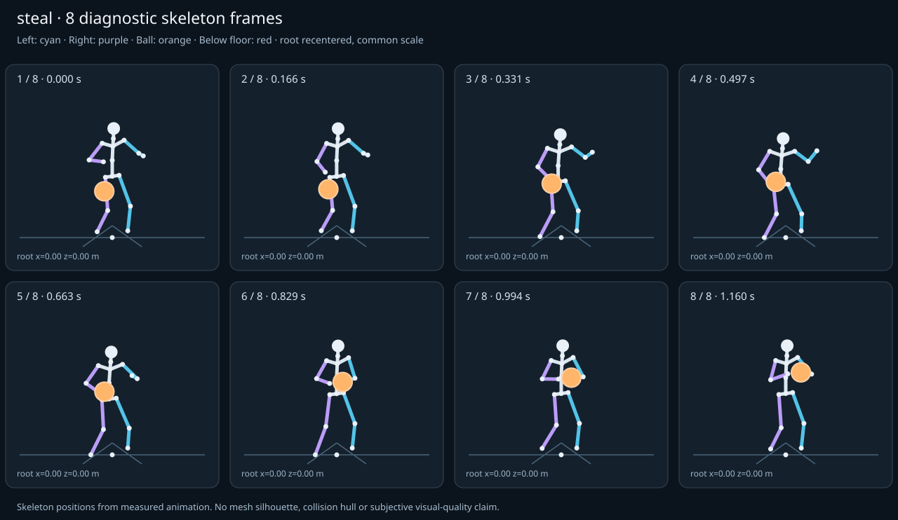

מה הוריד את הציון
- מגע בכדור: חסרים נתוני מדידה (Some declared contacts could not be sampled; partial observations cannot certify the full clip.)
- קפיצות פוזה: RightHand בזמן 0.6214 ש׳; קפיצת סיבוב שקולה 42.8294 מעלות ב־60Hz (אדום)
- כניסה ויציאה מול המתנה: פער ב־יציאה מול המתנה; יחס חריגה 1.1791 (צהוב)
כיסוי: 86%. לא כל מדד חל על כל קליפ; הסטטוס והראיות מפורטים למטה.
שמונה פריימים
תצוגת שלד אבחונית שנבנתה מהפריימים הנמדדים. צד שמאל בכחול, ימין בסגול, כדור בכתום. מיקום השורש ממורכז לצפייה; מיקומו בעולם כתוב בכל פריים.

המדדים והראיות
| מדד | מצב | ערך | ציון | סף ופרטי מדידה |
|---|---|---|---|---|
| החלקת רגליים | ירוק | 0 height ratio | 100 | {
"definition": {
"label": "החלקת רגליים",
"unit": "height ratio",
"green": 0.01,
"yellow": 0.035,
"weight": 18,
"description": "Maximum horizontal sole displacement from the first sample of each declared support window, divided by character height. Inferred support is used only when no windows were supplied."
},
"value": 0.000006,
"status": "green",
"score": 99.99,
"evidence": {
"coordinateSpace": "authored reference world (simulation-owned)",
"supportSource": "declared",
"windows": 4,
"samples": 349,
"maxDriftMeters": 0.000011,
"p95SpeedMetersPerSecond": 0.002399,
"worst": {
"bone": "LeftFoot",
"t": 0.683333,
"start": 0,
"end": 1.16,
"driftMeters": 0.000011
}
}
} |
| חדירה לרצפה | ירוק | 0 height ratio | 100 | {
"definition": {
"label": "חדירה לרצפה",
"unit": "height ratio",
"green": 0.005,
"yellow": 0.02,
"weight": 15,
"description": "Maximum depth of the supplied sole probe points and all skeletal joint centers below the declared floor plane, divided by height. Sole probes are not a mesh collision audit."
},
"value": 0.000015,
"status": "green",
"score": 99.94,
"evidence": {
"samples": 4300,
"floorY": 0,
"probeKind": "declared sole probes plus skeletal joint centers (no mesh surfaces)",
"maxDepthMeters": 0.000025,
"worst": {
"t": 0.733333,
"bone": "RightFoot",
"depthMeters": 0.000025,
"y": -0.000025
}
}
} |
| קפיצות פוזה | אדום | 2.855 discontinuity ratio | 46 | {
"definition": {
"label": "קפיצות פוזה",
"unit": "discontinuity ratio",
"green": 1,
"yellow": 2.5,
"weight": 18,
"description": "Maximum adjacent 60 Hz-equivalent step: root-relative marker displacement / 0.04 height, root-relative rotation / 15 degrees, or root translation / 0.08 height. A fast continuous action can also exceed this screening threshold."
},
"value": 2.855295,
"status": "red",
"score": 46.45,
"evidence": {
"adjacentPairs": 214,
"observations": 3638,
"maxDegrees60Hz": 42.829424,
"maxMarkerStepHeight60Hz": 0.032702,
"maxRootStepHeight60Hz": 0,
"worst": {
"ratio": 2.8552949080531276,
"t": 0.621429,
"previousTime": 0.616667,
"bone": "RightHand",
"markerStepHeight60Hz": 0.025369,
"degrees60Hz": 42.829424
}
}
} |
| חריגות אנטומיות | ירוק | 0 % affected frames | 100 | {
"definition": {
"label": "חריגות אנטומיות",
"unit": "% affected frames",
"green": 0.5,
"yellow": 3,
"weight": 14,
"description": "Percentage of frames with elbow or knee flexion above 165 degrees, neck bend above 80 degrees, or a segment length changing by more than 5%. Optional calibrated hinge checks detect reverse knee flexion above 8 degrees. Conservative marker limits do not diagnose axial joint twist."
},
"value": 0,
"status": "green",
"score": 100,
"evidence": {
"testedFrames": 215,
"affectedFrames": 0,
"checks": 3655,
"maxLimbFlexionDegrees": 129.699471,
"maxRelativeSegmentLengthChange": 0,
"hingeDirectionChecked": true,
"axialTwistChecked": false,
"violations": []
}
} |
| מגע בכדור | אין די נתונים | — height ratio | — | {
"definition": {
"label": "מגע בכדור",
"unit": "height ratio",
"green": 0.015,
"yellow": 0.05,
"weight": 13,
"description": "Maximum absolute distance from the ball surface to the sampled, bone-transformed declared contact point, divided by height. Events are evaluated at their exact declared times by interpolation."
},
"value": null,
"status": "insufficient-data",
"score": null,
"reason": "Some declared contacts could not be sampled; partial observations cannot certify the full clip.",
"evidence": {
"radiusMeters": 0.12,
"samples": 186,
"missed": [
{
"bone": "LeftHand",
"t": 1.16,
"reason": "outside sampled interval"
},
{
"bone": "RightHand",
"t": 1.16,
"reason": "outside sampled interval"
}
],
"contacts": [
{
"t": 0.666667,
"bone": "RightHand",
"gapMeters": 0.000362,
"signedGapMeters": -0.000362,
"centerDistanceMeters": 0.119638,
"contactPoint": [
-0.432269,
0.929877,
0.337829
],
"ballCenter": [
-0.370023,
0.929931,
0.44
],
"declaredLocalPoint": true
},
{
"t": 0.683333,
"bone": "RightHand",
"gapMeters": 0.000319,
"signedGapMeters": -0.000319,
"centerDistanceMeters": 0.119681,
"contactPoint": [
-0.452052,
0.930198,
0.353387
],
"ballCenter": [
-0.369367,
0.930259,
0.439914
],
"declaredLocalPoint": true
},
{
"t": 0.616667,
"bone": "RightHand",
"gapMeters": 0.000214,
"signedGapMeters": 0.000214,
"centerDistanceMeters": 0.120214,
"contactPoint": [
-0.373245,
0.916143,
0.319805
],
"ballCenter": [
-0.375027,
0.91492,
0.44
],
"declaredLocalPoint": true
},
{
"t": 0.65,
"bone": "RightHand",
"gapMeters": 0.000183,
"signedGapMeters": -0.000183,
"centerDistanceMeters": 0.119817,
"contactPoint": [
-0.409636,
0.928502,
0.326757
],
"ballCenter": [
-0.370494,
0.928517,
0.44
],
"declaredLocalPoint": true
},
{
"t": 0.7,
"bone": "RightHand",
"gapMeters": 0.000157,
"signedGapMeters": -0.000157,
"centerDistanceMeters": 0.119843,
"contactPoint": [
-0.460819,
0.932778,
0.369675
],
"ballCenter": [
-0.363105,
0.932821,
0.43906
],
"declaredLocalPoint": true
},
{
"t": 0.633333,
"bone": "RightHand",
"gapMeters": 0.000094,
"signedGapMeters": 0.000094,
"centerDistanceMeters": 0.120094,
"contactPoint": [
-0.389383,
0.924226,
0.321159
],
"ballCenter": [
-0.372085,
0.923745,
0.44
],
"declaredLocalPoint": true
},
{
"t": 0.716667,
"bone": "RightHand",
"gapMeters": 0.000069,
"signedGapMeters": -0.000069,
"centerDistanceMeters": 0.119931,
"contactPoint": [
-0.453645,
0.939649,
0.383123
],
"ballCenter": [
-0.346386,
0.93966,
0.43678
],
"declaredLocalPoint": true
},
{
"t": 0.6,
"bone": "RightHand",
"gapMeters": 0.000045,
"signedGapMeters": 0.000045,
"centerDistanceMeters": 0.120045,
"contactPoint": [
-0.363267,
0.902837,
0.321011
],
"ballCenter": [
-0.379146,
0.902561,
0.44
],
"declaredLocalPoint": true
},
{
"t": 0.733333,
"bone": "RightHand",
"gapMeters": 0.000042,
"signedGapMeters": -0.000042,
"centerDistanceMeters": 0.119958,
"contactPoint": [
-0.431537,
0.950968,
0.392232
],
"ballCenter": [
-0.318722,
0.950977,
0.433008
],
"declaredLocalPoint": true
},
{
"t": 0.766667,
"bone": "RightHand",
"gapMeters": 0.000037,
"signedGapMeters": -0.000037,
"centerDistanceMeters": 0.119963,
"contactPoint": [
-0.361402,
0.981571,
0.398819
],
"ballCenter": [
-0.24386,
0.981603,
0.422799
],
"declaredLocalPoint": true
},
{
"t": 0.75,
"bone": "RightHand",
"gapMeters": 0.000035,
"signedGapMeters": -0.000035,
"centerDistanceMeters": 0.119965,
"contactPoint": [
-0.398827,
0.965592,
0.397143
],
"ballCenter": [
-0.282932,
0.965619,
0.428127
],
"declaredLocalPoint": true
},
{
"t": 0.783333,
"bone": "RightHand",
"gapMeters": 0.000033,
"signedGapMeters": -0.000033,
"centerDistanceMeters": 0.119967,
"contactPoint": [
-0.325509,
0.996616,
0.398503
],
"ballCenter": [
-0.207102,
0.99664,
0.417787
],
"declaredLocalPoint": true
},
{
"t": 1,
"bone": "RightHand",
"gapMeters": 0.000022,
"signedGapMeters": -0.000022,
"centerDistanceMeters": 0.119978,
"contactPoint": [
-0.197174,
1.065567,
0.381342
],
"ballCenter": [
-0.078047,
1.06557,
0.395609
],
"declaredLocalPoint": true
},
{
"t": 1.016667,
"bone": "RightHand",
"gapMeters": 0.000022,
"signedGapMeters": -0.000022,
"centerDistanceMeters": 0.119978,
"contactPoint": [
-0.182283,
1.074999,
0.378362
],
"ballCenter": [
-0.063156,
1.075001,
0.392631
],
"declaredLocalPoint": true
},
{
"t": 0.983333,
"bone": "RightHand",
"gapMeters": 0.00002,
"signedGapMeters": -0.00002,
"centerDistanceMeters": 0.11998,
"contactPoint": [
-0.211929,
1.056223,
0.384291
],
"ballCenter": [
-0.092801,
1.056226,
0.39856
],
"declaredLocalPoint": true
},
{
"t": 0.8,
"bone": "RightHand",
"gapMeters": 0.000019,
"signedGapMeters": -0.000019,
"centerDistanceMeters": 0.119981,
"contactPoint": [
-0.296583,
1.008645,
0.397371
],
"ballCenter": [
-0.177729,
1.008656,
0.413781
],
"declaredLocalPoint": true
},
{
"t": 1.033333,
"bone": "RightHand",
"gapMeters": 0.000019,
"signedGapMeters": -0.000019,
"centerDistanceMeters": 0.119981,
"contactPoint": [
-0.167925,
1.084094,
0.375486
],
"ballCenter": [
-0.048796,
1.084096,
0.389759
],
"declaredLocalPoint": true
},
{
"t": 0.966667,
"bone": "RightHand",
"gapMeters": 0.000016,
"signedGapMeters": -0.000016,
"centerDistanceMeters": 0.119984,
"contactPoint": [
-0.225888,
1.047385,
0.387079
],
"ballCenter": [
-0.106756,
1.047388,
0.401351
],
"declaredLocalPoint": true
},
{
"t": 1.05,
"bone": "RightHand",
"gapMeters": 0.000015,
"signedGapMeters": -0.000015,
"centerDistanceMeters": 0.119985,
"contactPoint": [
-0.154732,
1.092451,
0.372841
],
"ballCenter": [
-0.0356,
1.092453,
0.38712
],
"declaredLocalPoint": true
},
{
"t": 1.016667,
"bone": "LeftHand",
"gapMeters": 0.000014,
"signedGapMeters": 0.000014,
"centerDistanceMeters": 0.120014,
"contactPoint": [
0.056007,
1.074998,
0.378364
],
"ballCenter": [
-0.063156,
1.075001,
0.392631
],
"declaredLocalPoint": true
}
],
"contactDetailsTruncated": true,
"coordinateSpace": "authored reference world (simulation-owned)",
"observedValue": 0.000214,
"observedStatus": "green",
"observationCoverage": 0.9893617021276596
},
"partial": true
} |
| כניסה ויציאה מול המתנה | צהוב | 1.179 continuity ratio | 77 | {
"definition": {
"label": "כניסה ויציאה מול המתנה",
"unit": "continuity ratio",
"green": 1,
"yellow": 3,
"weight": 10,
"description": "Worst entry/exit mismatch to the best matching idle phase: RMS marker error / 0.04 height, RMS bone rotation / 25 degrees, or RMS endpoint velocity error / 0.75 height per second. Horizontal root translation is aligned; root height and body pose remain measurable."
},
"value": 1.179143,
"status": "yellow",
"score": 77.31,
"evidence": {
"entry": {
"ratio": 1.042140611178001,
"t": 0,
"idleTime": 0.863396,
"markers": 17,
"rmsPositionHeight": 0.017609,
"rmsRotationDegrees": 26.053515,
"rmsVelocityHeightPerSecond": 0.060428,
"velocityEvaluated": true
},
"exit": {
"ratio": 1.1791430310734312,
"t": 1.16,
"idleTime": 0.871698,
"markers": 17,
"rmsPositionHeight": 0.046142,
"rmsRotationDegrees": 29.478576,
"rmsVelocityHeightPerSecond": 0.042342,
"velocityEvaluated": true
},
"worstEndpoint": "exit",
"alignment": "horizontal root translation; raw asset poses used when provided"
}
} |
| מהירות גוף מול צעדים | לא חל | — relative speed error | — | {
"definition": {
"label": "מהירות גוף מול צעדים",
"unit": "relative speed error",
"green": 0.2,
"yellow": 0.5,
"weight": 8,
"description": "Relative difference between average root travel speed and the median backward support-foot sweep speed relative to the root. Cadence and implied stride lengths are also reported. In-place clips need an explicit reference travel scenario; stationary actions are not scored as locomotion."
},
"value": null,
"status": "not-applicable",
"score": null,
"reason": "This action is not declared locomotion.",
"evidence": {}
} |
| סימטריה | ירוק | 0 relative mismatch | 100 | {
"definition": {
"label": "סימטריה",
"unit": "relative mismatch",
"green": 0.03,
"yellow": 0.1,
"weight": 4,
"description": "Maximum bilateral segment-length mismatch. Looping locomotion additionally compares reflected half-cycle leg markers; explicit pose symmetry compares simultaneous bilateral markers. One-sided actions retain unscored motion diagnostics, so a valid kick or dribble arm is not penalized for intentional asymmetry."
},
"value": 0,
"status": "green",
"score": 100,
"evidence": {
"mode": "structural",
"modeSource": "structural default for intentional asymmetry",
"structuralMismatch": 0,
"segments": [
{
"segment": "Arm-ForeArm",
"mismatch": 0
},
{
"segment": "ForeArm-Hand",
"mismatch": 0
},
{
"segment": "UpLeg-Leg",
"mismatch": 0
},
{
"segment": "Leg-Foot",
"mismatch": 0
}
],
"motionRmsHeight": null,
"worstMotion": null,
"bilateralPoseRmsHeightUnscored": 0.078377,
"note": "One-sided authored actions are checked for structural symmetry only."
}
} |